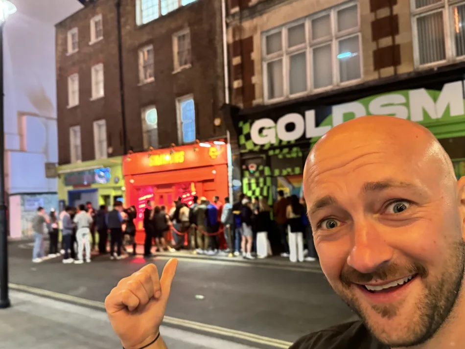

Answer one bizarre question each day. Keep him BALD... or give him hair!
Unlock one random Freer police badge for every 3 correct daily answers in a row. No duplicates!
Every wrong answer gives our bald hero another outrageous hairstyle.